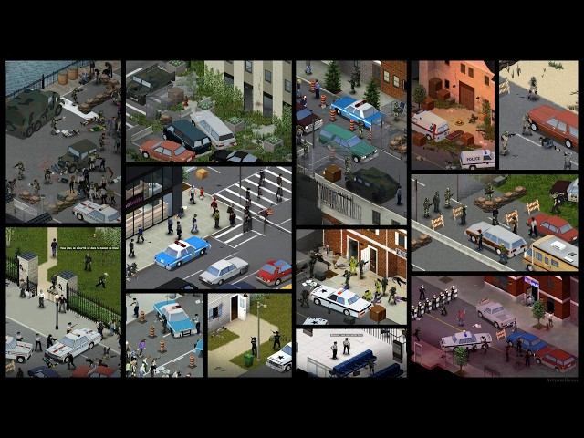
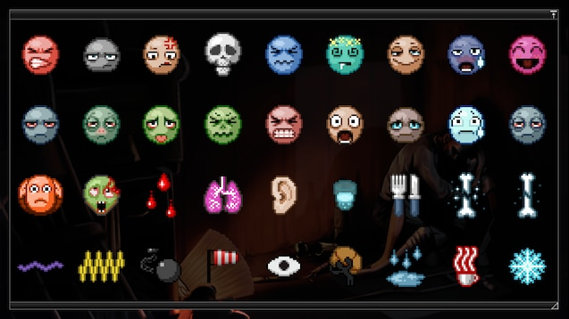

Inicio
Audio Descrição da Pagina
A História e o Cenário: O Surto de 1993
Todo o cenário se passa no ano de 1993 na região de Knox County, no estado de Kentucky, EUA (fortemente baseada em localizações geográficas reais). O surto começa de forma repentina em julho daquele ano: uma doença misteriosa apelidada de "Knox Infection" se espalha rapidamente pela população por meio de fluidos e do próprio ar, transformando cidadãos comuns em mortos-vivos agressivos.
O exército dos Estados Unidos isola toda a região com uma zona de quarentena militarizada, mas o bloqueio falha dias depois. O jogador assume o papel de um dos raros sobreviventes que possuem imunidade natural à transmissão aérea do vírus — porém, você ainda é totalmente vulnerável a mordidas, arranhões e aos perigos do novo mundo abandonado.

As Quatro Estações e o Clima Realista
Diferente de jogos onde o clima é apenas um efeito visual, em Project Zomboid a passagem das estações altera drasticamente a sua jogabilidade e dita como você deve se vestir e se comportar:
- Verão (Julho a Setembro): É a estação inicial. O calor escaldante pode fazer seu personagem hiperaquecer, desidratar rapidamente e cansar mais cedo se estiver vestindo roupas pesadas de proteção.
- Outono (Outubro a Novembro): O clima começa a esfriar, as folhas caem e tempestades de chuva forte se tornam frequentes, limitando drasticamente sua visão e audição enquanto explora as ruas.
- Inverno (Dezembro a Fevereiro): O teste definitivo de sobrevivência. Temperaturas congelantes e nevascas exigem roupas térmicas grossas, caso contrário seu personagem sofrerá de hipotermia e morrerá congelado rapidamente. O gelo também bloqueia fontes fáceis de água, como rios.
- Primavera (Março a Junho): O gelo derrete, a natureza começa a retomar as cidades com árvores e arbustos crescendo no asfalto, e a névoa matinal densa prejudica a visibilidade na exploração.
Eventos Dinâmicos: O Mundo em Colapso
O mundo do jogo não é estático. Mesmo que você decida se isolar completamente dentro de uma casa fortificada, o jogo utiliza mecânicas dinâmicas para garantir que o perigo vá até você:
- O Colapso pelas Telas e Ondas de Rádio: Durante os primeiros nove dias do surto, o mundo exterior ainda tenta resistir. Sintonizar televisões ou rádios revela o pânico global. Nos primeiros dias, os apresentadores minimizam a situação, chamando o vírus de uma "gripe severa". Conforme os dias avançam, repórteres começam a tossir ao vivo, relatos de canibalismo surgem e o exército bloqueia as fronteiras. Por volta do décimo dia, o sinal cai por completo, restando apenas estática e um silêncio fantasmagórico.
- O Evento do Helicóptero: Entre o sexto e o nono dia de sobrevivência, um helicóptero de notícias ou do exército passará voando sobre a região. Se ele avistar você na rua, começará a circular e a te seguir por horas. O barulho ensurdecedor das hélices ecoa por quilômetros, atraindo milhares de zumbis de todos os cantos do mapa diretamente para a sua posição. A única salvação é fugir de carro ou se esconder em uma sala sem janelas antes mesmo de o veículo aéreo chegar.
- Os Sons Fantasmas (Eventos Meta): Enquanto explora ou tenta dormir, você ouvirá barulhos assustadores vindos de longe, como tiros solitários, gritos desesperados ou cães latindo. Você nunca encontrará a origem desses sons; eles são gerados pelo jogo com um propósito cruel: mover as hordas através da audição apurada dos zumbis. Uma rua limpa pela manhã pode ser invadida por centenas de mortos-vivos à noite apenas porque um tiro ecoou na região.
- Casas de Sobreviventes: Ao explorar os bairros, você encontrará casas totalmente trancadas e com tábuas pregadas nas janelas por fora. Esses locais contam histórias ambientais de antigos moradores: alguns se transformaram juntos dentro do quarto, outros deixaram baús cheios de armas e mochilas militares, e alguns cometeram erros fatais, deixando o fogão ligado e queimando a casa inteira.

Os Modificadores de Status (Moodles)
A sua barra de vida tradicional não é o único indicador de sobrevivência. O jogo utiliza um sistema hiperrealista de ícones de status no canto da tela que mostram exatamente o que o sobrevivente está sentindo física e mentalmente:
- Necessidades Físicas Básicas: Sentir fome reduz progressivamente a sua força física e a capacidade de carregar peso, além de impedir a regeneração natural da sua vida. A sede é ainda mais agressiva: se a desidratação chegar ao nível crítico, a saúde despenca até a morte. A exaustão física (por correr ou pular muros) e o cansaço (necessidade de dormir) reduzem drasticamente o seu dano contra os zumbis e deixam seus ataques extremamente lentos.
- O Fator Mental (O Inimigo Invisível): O pânico surge imediatamente ao avistar zumbis. O pânico severo faz suas mãos tremerem, reduzindo a precisão de armas de fogo e diminuindo o dano corporal. Já o tédio e a tristeza surgem por ficar muito tempo trancado sem fazer nada ou por comer comida estragada. A tristeza profunda faz com que todas as ações do seu sobrevivente — como colocar bandagens ou ler livros — fiquem arrastadas, lentas e demoradas.
- Doenças e Envenenamento: O status de enjoo ou doença surge se você comer comida estragada, beber água não filtrada, passar tempo respirando o odor de pilhas de cadáveres em decomposição ou, no pior dos cenários, se você foi infectado pelo vírus zumbi através de uma mordida ou arranhão. Se for o vírus, o enjoo evoluirá para uma febre incurável até o fim do personagem.
